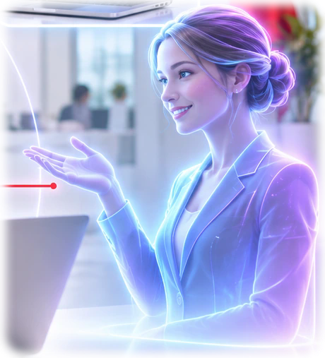

◎
Asystent pracownika
Pomaga przygotować samoocenę, uporządkować osiągnięcia i wyjaśniać kryteria oceny.
Inteligentny asystent 3D wspierający ocenę pracowników, rozmowy rozwojowe i planowanie kompetencji w administracji publicznej.

Nowa strona korzysta z tej samej kolorystyki, atmosfery i postaci co prezentacja: biel, głęboki granat, neonowy błękit i czerwone akcenty.
Pomaga przygotować samoocenę, uporządkować osiągnięcia i wyjaśniać kryteria oceny.
Porządkuje informacje o wynikach, sugeruje pytania i pomaga budować plan rozwoju.
Asystent pokazuje, gdzie kliknąć, co wpisać i jakie działania wykonać krok po kroku.
Serwis jest spójny z prezentacją — bez obcego logo hackathonu i bez szarej, nijakiej palety.
W tej sekcji wykorzystana jest ta sama asystentka, którą pokazaliśmy na slajdach. Możesz obracać model ręcznie suwakiem albo przeciąganiem myszą. Działa to jak prezentacja sportowa — jako efekt 360°.
Niżej zostawiamy funkcjonalną część serwisu: rozmowę z asystentką, szybkie podpowiedzi i projekt podsumowania oceny okresowej.
Tutaj pojawi się projekt podsumowania. Końcowej oceny zawsze dokonuje człowiek.
Z tego serwisu możesz przejść bezpośrednio do projektu sportowego ALTIMA ML VISION. Oba projekty pozostają osobne, ale są częścią jednej linii rozwoju AI‑asystentów.
Otwórz ALTIMA ML VISION ↗